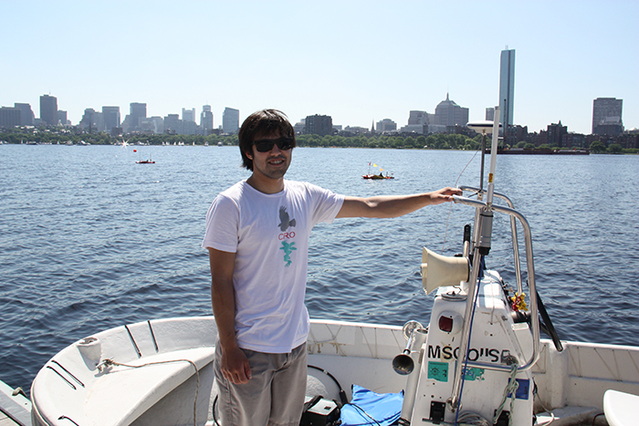

Brooks L. Reed
I am a MIT Postdoctoral Associate, working on multi-vehicle communication and control with Franz Hover and John Leonard in the MIT Marine Robotics Group.
Broadly speaking, I am interested in the application of control and optimization techniques to real-world problems: "bringing algorithms to life." Specifically, my work is in the area of multi-vehicle systems and the integration of feedback control and communication design. I believe strongly in implementation and experiments---a major component of my research is discovering cutting-edge algorithms with promise and developing them to work in the field.
My love of the ocean has inspired the application of my engineering skills towards ocean science. This is a fascinating and societally relevant field, however, I am open to working in any domain where there is a compelling problem and the opportunity to apply my abilities to make an impact.
Research Interests
Dynamics and feedback control, estimation, communication-constrained control, marine robotics, multi-agent systems, optimization
Education
My PhD work was with Prof. Franz Hover's research group in the MIT Dept. of Mechanical Engineering.
I was co-advised by Dr. Dana Yoerger of the Deep Submergence Lab at WHOI.
Massachusetts Institute of Technology, Cambridge, MA
Woods Hole Oceanographic Institute, Woods Hole, MA
PhD, MIT/WHOI Joint Program in Oceanographic Engineering, December 2014
Thesis: “Controller Design for Underwater Vehicle Systems with Communication Constraints”
SM, MIT/WHOI Joint Program in Oceanographic Engineering, August 2011
Thesis: “Multiple-Vehicle Resource-Constrained Navigation in the Deep Ocean”
Advisors: Prof. Franz Hover (MIT), Dr. Dana Yoerger (WHOI)
Massachusetts Institute of Technology, Cambridge, MA
SB, MIT Mechanical and Ocean Engineering, June 2009
NOTE: From now on, the up-to-date version of this website will be hosted at github: Brooks L. Reed
Google Scholar